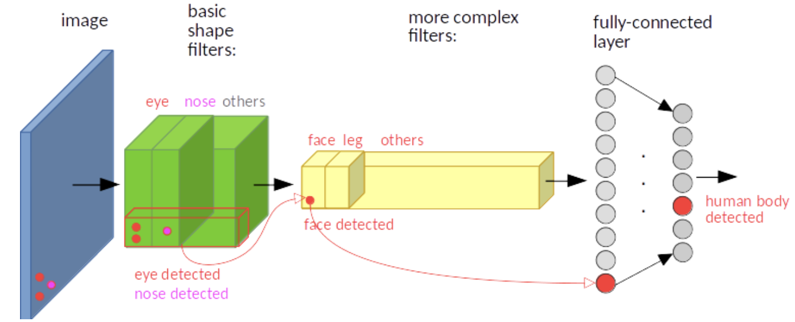
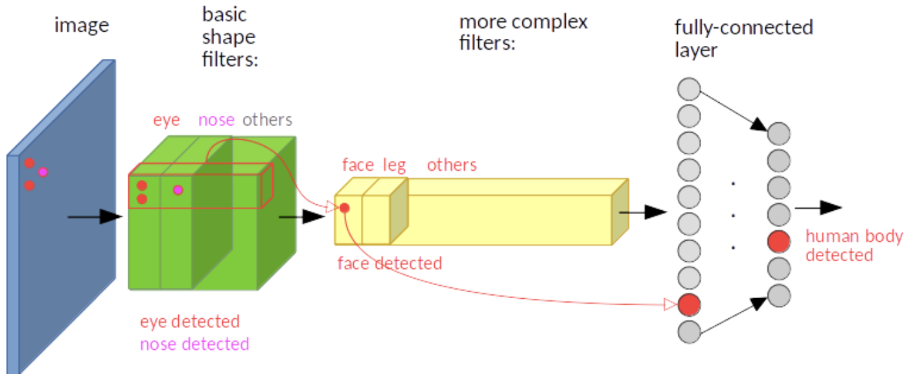
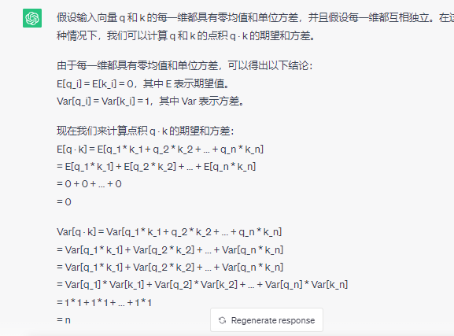
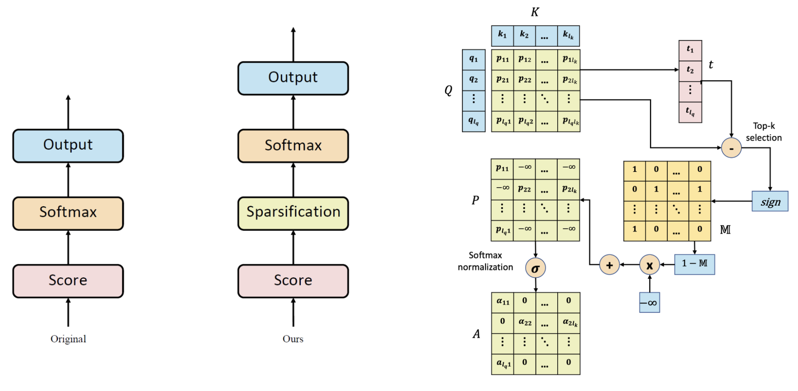

引言
将图像拆分为块（patch），并将这些图像块的线性嵌入序列（patch token）作为 Transformer 输入。
当在没有强正则化的中型数据集（如 ImageNet）上进行训练时，这些模型产生的准确率比同等大小的 ResNet 低几个百分点。 这种看似令人沮丧的结果可能是意料之中的：Transformers 缺乏 CNN 固有的一些归纳偏置 (inductive biases) ，如平移等效性和局部性 （translation equivariance and locality），因此在数据量不足时，训练不能很好地泛化。
但若在更大的数据集（14M-300M图像）上训练，情况就会发生变化，我们发现大规模训练胜过归纳偏置。
归纳偏置：学习算法中，当学习器去预测其未遇到过的输入结果时，所做的一些假设的集合
例如，深度神经网络偏好性地认为，层次化处理信息有更好效果；卷积神经网络认为信息具有空间局部性，可用滑动卷积共享权重的方式降低参数空间；循环神经网络则将时序信息纳入考虑，强调顺序重要性；图网络则认为中心节点与邻居节点的相似性会更好地引导信息流动。
CNN 平移不变性：卷积+最大池化约等于平移不变性
如下面两图，输入图像的左下角有一个人脸，经过卷积，人脸的特征（眼睛，鼻子）也位于特征图的左下角。假如人脸特征在图像的左上角，那么卷积后对应的特征也在特征图的左上角。
最大池化，它返回感受野中的最大值，如果最大值被移动了，但是仍然在这个感受野中，那么池化层也仍然会输出相同的最大值。

CNN 局部性：如果我们想要识别出与物体相对应的图案，如天空中的一架飞机，我们可能需要看看附近的像素是如何排列的，但我们对那些彼此相距很远的组合的像素是如何出现的并不那么感兴趣。
方法
图像块嵌入（Patch Embeddings）
图像 $X\in\mathbb{R}^{H\times W\times C}$经过分块得到 2D patch 序列 $x_p\in\mathbb{R}^{N\times(P^2\cdot C)}$，其中 $N=\frac{H\cdot W}{P^2}$ 为 ViT 有效输入序列长度。
ViT 在所有层中使用相同维度的隐向量大小 D，将 $x_p$经过 FC 层将 $P^2\cdot C$ 映射到 D，同时 N 保持不变。
上述即为图像块嵌入，本质即为对每一个图像块向量做一个线性变换，将其映射到 D 维，得到 $x_pE\in\mathbb{R}^{N\times D}$。
num_patches = (image_height // patch_height) * (image_width // patch_width)
patch_dim = channels * patch_height * patch_width
to_patch_embedding = nn.Sequential(
Rearrange('b c (h p1) (w p2) -> b (h w) (p1 p2 c)', p1 = patch_height, p2 = patch_width),
nn.LayerNorm(patch_dim),
nn.Linear(patch_dim, dim),
nn.LayerNorm(dim),
)
x = to_patch_embedding(x)
可学习的嵌入（Learnable Embedding）
为图像块嵌入序列手动预设一个可学习的嵌入 cls token，最后取追加的 cls token 作为输出。最终输入 ViT 的嵌入向量总长度为 N+1，cls token 在训练时随机初始化。
cls_token = nn.Parameter(torch.randn(1, 1, dim))
cls_tokens = repeat(cls_token, '1 1 d -> b 1 d', b = b)
x = torch.cat((cls_tokens, x), dim=1)
位置嵌入（Position Embeddings）
位置嵌入 $E_{pos}\in\mathbb{R}^{(N+1)\times D}$被加入图像块嵌入以保留输入图像块之间的空间位置关系，这是由于自注意力的扰动不变性（Permutation-invariant），即打乱 Sequence 中 tokens 的顺序并不会改变结果。若不给模型提供图像块的位置信息，那么模型就需要通过图像块的语义来学习拼图，这就额外增加了学习成本。
论文中比较了以下几种不同的位置编码方案：
- 无位置嵌入
- 1-D 位置编码嵌入：将 2D 图像块视作 1D 序列
- 2-D 位置编码嵌入：考虑图像块 2-D 位置 (x,y)
- 相对位置编码嵌入：考虑图像块的相对位置
其中无位置嵌入效果很差，其他效果接近。Transformer 中采用固定位置编码，ViT 采用标准可学习的 1-D 位置编码嵌入。
pos_embedding = nn.Parameter(torch.randn(1, num_patches + 1, dim))
dropout = nn.Dropout(emb_dropout)
x += self.pos_embedding[:, :(n + 1)]
x = self.dropout(x)
最终输入： $$ x_0=[x_{cls};x_p^1E;x_p^2E;\dots;x_p^NE]+E_{pos},\quad x_0\in\mathbb{R}^{(N+1)\times D} $$
Transformer 编码器
Transformer 编码器由交替的多头自注意力层和多层感知机块构成，每个块前应用 LayerNorm，每个块后残差连接。
多头自注意力（MSA）机制中的 QKV 矩阵由嵌入向量 X 与三个不同权重的矩阵相乘得到。
Q 与 K 转置相乘，然后使用 Softmax 计算每一个单词对于其他单词的注意力系数，公式中的 Softmax 是对每一行计算，即每一行的和为 1。
将 Softmax 矩阵与 V 矩阵相乘得到输出 $Z_i$，最后将每一头的输出 Z 拼接在一起，经过一个线性层得到最终输出 Z。
公式表达如下： $$ \begin{align*} &Q,K,V=MatMul(X,(W^Q,W^K,W^V))\\ &\text{head}_i=\text{Attention}(Q,K,V)=\text{softmax}(\frac{QK^T}{\sqrt{d_k}})\cdot V\\ &\text{MultiHead}(Q,K,V)=Cat(\text{head}_1,\text{head}_2,\dots,\text{head}_h)\cdot W^o \end{align*} $$
MSA 后面跟一个多层感知机（MLP），将特征维度先增大再恢复，其中使用 GELU 激活函数。
class PreNorm(nn.Module):
def __init__(self, dim, fn):
super().__init__()
self.norm = nn.LayerNorm(dim)
self.fn = fn
def forward(self, x, **kwargs):
return self.fn(self.norm(x), **kwargs)
class FeedForward(nn.Module):
def __init__(self, dim, hidden_dim, dropout = 0.):
super().__init__()
self.net = nn.Sequential(
nn.Linear(dim, hidden_dim),
nn.GELU(),
nn.Dropout(dropout),
nn.Linear(hidden_dim, dim),
nn.Dropout(dropout)
)
def forward(self, x):
return self.net(x)
class Attention(nn.Module):
def __init__(self, dim, heads = 8, dim_head = 64, dropout = 0.):
super().__init__()
inner_dim = dim_head * heads
project_out = not (heads == 1 and dim_head == dim)
self.heads = heads
self.scale = dim_head ** -0.5
self.attend = nn.Softmax(dim = -1)
self.dropout = nn.Dropout(dropout)
self.to_qkv = nn.Linear(dim, inner_dim * 3, bias = False)
self.to_out = nn.Sequential(
nn.Linear(inner_dim, dim),
nn.Dropout(dropout)
) if project_out else nn.Identity()
def forward(self, x):
qkv = self.to_qkv(x).chunk(3, dim = -1)
q, k, v = map(lambda t: rearrange(t, 'b n (h d) -> b h n d', h = self.heads), qkv)
dots = torch.matmul(q, k.transpose(-1, -2)) * self.scale
attn = self.attend(dots)
attn = self.dropout(attn)
out = torch.matmul(attn, v)
out = rearrange(out, 'b h n d -> b n (h d)')
return self.to_out(out)
class Transformer(nn.Module):
def __init__(self, dim, depth, heads, dim_head, mlp_dim, dropout = 0.):
super().__init__()
self.layers = nn.ModuleList([])
for _ in range(depth):
self.layers.append(nn.ModuleList([
PreNorm(dim, Attention(dim, heads = heads, dim_head = dim_head, dropout = dropout)),
PreNorm(dim, FeedForward(dim, mlp_dim, dropout = dropout))
]))
def forward(self, x):
for attn, ff in self.layers:
x = attn(x) + x
x = ff(x) + x
return x
最后提取可学习的嵌入 cls token 对应的特征用于模型输出。
常见问题
-
ViT是为了解决什么问题？
- 处理大规模图像数据。传统 CNN 在面对大规模数据集时面临着计算和内存方面的挑战。Transformer 高度并行化，适合大规模数据集训练。
- 跨越空间信息。传统 CNN 使用局部感受野的卷积操作，无法充分捕捉全局语义信息。ViT 能够解决这个问题。
-
Transformer 为什么用 LayerNorm 不用 BatchNorm？为什么 ViT 定长也用 LayerNorm 不用 BatchNorm？
- BN 是对一个 Batch 内的不同样本的同意特征去做归一化操作，LN 是对单个样本的不同特征做操作，不收样本数的限制。在 NLP 中，每个样本的长度可能不同，无法组合成一个批次进行处理。
- LN 是在样本内计算均值方差，这与自注意力机制的计算一致。而 BN 是在一个批次内跨样本计算均值方差，可能会破坏数据原有的数据分布。
-
为什么 $QK^T$ 除以 $\sqrt{n}$ 而不是 n?
点积结果需要除以一个数防止 softmax 结果过大使得梯度趋于 0。假设 Q 和 K 每一维都满足 0 均值 1 方差的分布，那么 Q*K 的方差为 n，除以 $\sqrt{n}$ 使结果满足方差为 1 的分布，达到归一化的效果。$aX\sim(0,a^2),X\sim(0,1)$
 -
自注意力计算复杂度为 $O(n^2)$，怎么优化？
[Explicit Sparse Transformer: Concentrated Attention Through Explicit Selection]
一个元素可能只与部分元素有关，但标准自注意力会给每个元素都分配权重，可通过 top-k 显示稀疏化，只关注部分元素。
如下图，最左边为标准自注意力计算流程，中间为稀疏的流程，最右边为执行示意图。简而言之，在 Softmax 之前，先通过 top-k 选择少数重要的元素，将其他元素设置为负无穷。通过这种操作可以使注意力更加集中。
 -
位置编码的作用是什么
自注意力计算是无向的，若没有位置编码，模型则无法知道 token 各自的位置信息。
位置编码可以使模型在注意力机制中考虑到输入的绝对和相对位置信息，从而能够更好地捕捉到序列数据中的顺序关系。
-
cls token 为什么能用来分类？还有哪些方法来进行最后的分类？
- cls token 随机初始化，并随着网络的训练不断更新，它能够编码整个数据集的统计特性；
- cls token 可以对全局特征进行聚合，并且不基于图像内容，避免对某一 token 有倾向性；
- cls token 固定位置为 0，能够避免输出受到位置编码的干扰；
除了将 cls token 用于最后 MLP 分类的输入，还可以对输出特征进行池化或直接将所有特征输出 MLP 分类层。